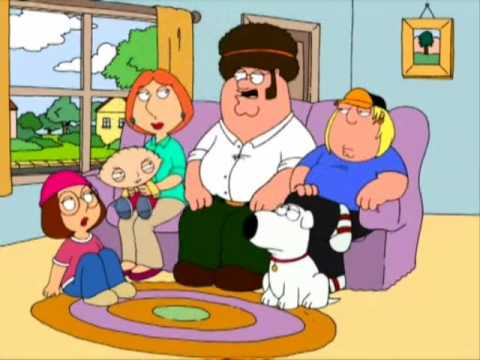
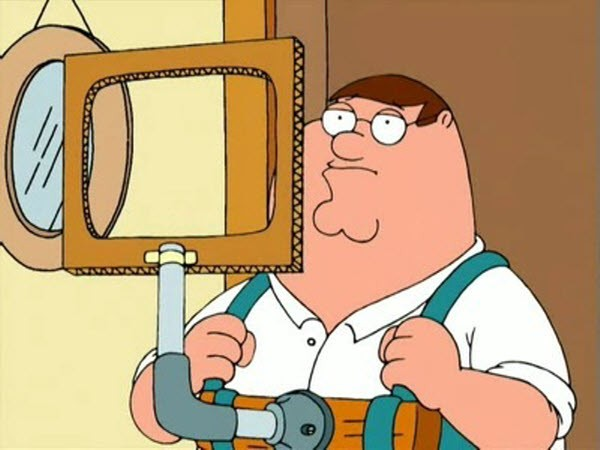
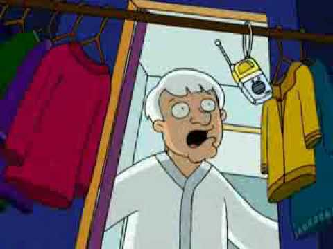
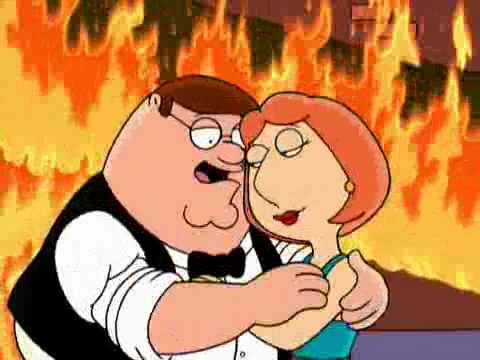
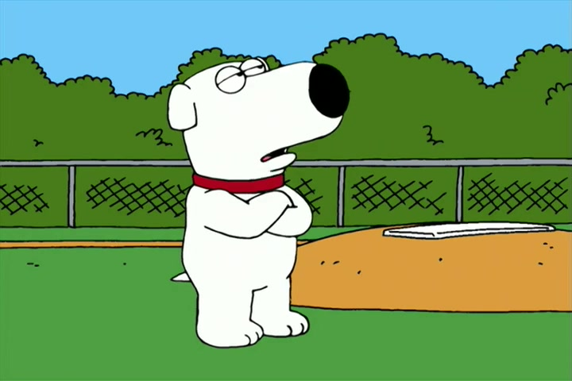
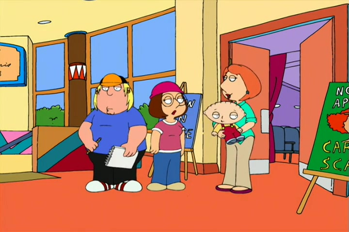

Episodes
Season 1

1. Death Has A Shadow
Peter drinks at a bachelor party, then gets fired from his job for being hung over. Peter then applies for welfare, but after some confusion, gets sent a check for $150,000. His wife finds out and Peter returns the money by dumping it from a blimp. He is arrested as a result of this and the family has to save him.
1. Death Has A Shadow
Peter drinks at a bachelor party, then gets fired from his job for being hung over. Peter then applies for welfare, but after some confusion, gets sent a check for $150,000. His wife finds out and Peter returns the money by dumping it from a blimp. He is arrested as a result of this and the family has to save him.

2. I Never Met The Dead Man
Peter starts teaching Meg to drive then crashes into the town satellite dish. This in turn knocks out the city's cable. He promised Meg that if she takes the blame then he'll get her a car. Also, the TV is gone leaving Peter crazy. Also, Stewie attempted to destroy all vegetables in this episode
2. I Never Met The Dead Man
Peter starts teaching Meg to drive then crashes into the town satellite dish. This in turn knocks out the city's cable. He promised Meg that if she takes the blame then he'll get her a car. Also, the TV is gone leaving Peter crazy. Also, Stewie attempted to destroy all vegetables in this episode

3. Chitty Chitty Death Bang
Peter lets Meg to go to a party which makes Lois angry. This "party" ended up being a cult meeting. Peter then tries to save Meg while the leader of the cult chases him.
3. Chitty Chitty Death Bang
Peter lets Meg to go to a party which makes Lois angry. This "party" ended up being a cult meeting. Peter then tries to save Meg while the leader of the cult chases him.

4. Mind Over Murder
Peter gets into a fight at Chris's soccer game. He was then placed under house arrest and turned his basement into a bar. Lois begins singing each night at the bar. Stewie creates a time machineto avoid teething pain.
4. Mind Over Murder
Peter gets into a fight at Chris's soccer game. He was then placed under house arrest and turned his basement into a bar. Lois begins singing each night at the bar. Stewie creates a time machineto avoid teething pain.

5. A Hero Sits Next Door
The family gets new neighbors that moved in. Peter injured the best player on his company's baseball team so he had to find a replacement player. The replacement player ended up outshining Peter in the baseball game and he got jealous. He then tries to do something heroic to make up for this.
5. A Hero Sits Next Door
The family gets new neighbors that moved in. Peter injured the best player on his company's baseball team so he had to find a replacement player. The replacement player ended up outshining Peter in the baseball game and he got jealous. He then tries to do something heroic to make up for this.

6. The Son Also Draws
Chris does not want to be a youth scout anymore. The Scout Master then kicks Chris out. Peter then tries to get Chris back in. Peter ended up driving until he gets lost and runs into some "different" people. Lois and Peter then go separately to do their own adventures in this episode.
6. The Son Also Draws
Chris does not want to be a youth scout anymore. The Scout Master then kicks Chris out. Peter then tries to get Chris back in. Peter ended up driving until he gets lost and runs into some "different" people. Lois and Peter then go separately to do their own adventures in this episode.
These episodes are the first 6 of 7 episodes of season 1